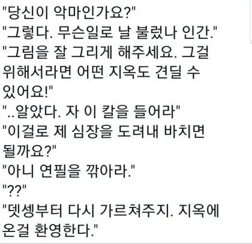

그림을 잘 그리고 싶어 악마를 소환한 자
댓글
5억년 버튼 같은 거라서 괜찮다
뎃생지옥이라니
야이 시발 선 그따구로 그을거야?
이새낀 기본이 없네?
아니 선이 그따군데 사람을 어캐그리노?
야, 지우개 내려놔.
야, 뒤로 가서 한 번 봐봐. 뭐 이상한 거 없냐?
야, 명암에서 명은 어디있냐? 다 눌러놨네?
야, 밀도 올리랬더니 때를 밀어놓네 아주.
아이 씻팔
씨맥의 피드백론에 의거, 이 계약은 성공한다.
그 그림이랑 설명 보면 진짜 그 사람이 선수 캐어와 육성을 위해 많은 시간 고뇌하고 고찰했다는 게 느껴지더라
악마가 매너있네 현실에서만 지옥을 느끼게 해주고
히히힣 니가 여기서 그림을 배우는 동안 원래 세계의 시간은 멈춰있지롱
미시입술 할때 생각나네


크아악 크로키 지옥
"어둠의 흐름을 잡아라."
"살릴 것과 죽일 것을 구분하라."
"더 찍어누르거라."
"빛과 어둠의 대비를 더 강하게 하라."
"네가 이 어둠을 감당할 수 있겠어?"
악마: 씨발 손목을 쓰지말고 어깨를 쓰라고
아 악마새끼야 노력없이 잘하고싶다고
진짜 악마네...
저러고 이제 영혼은 반절만 받아가야 진짜 악마임
확실히 실력이 좋아졌는데 영혼을 반절만 바쳐서 어중간하다고 고뇌하다가 나머지도 바칠테니까
니가 그린 그림은 너무 좆같아서 지옥으로 걸어가겠다
위플래시;
'악마와 지옥의 데셍 특훈에도 불구하고, 아돌프는 미대 입시 시험에 떨어지고 말았다.'
아 지옥도 견딜수 있지만 한번에 편하게 잘하고 싶다고요